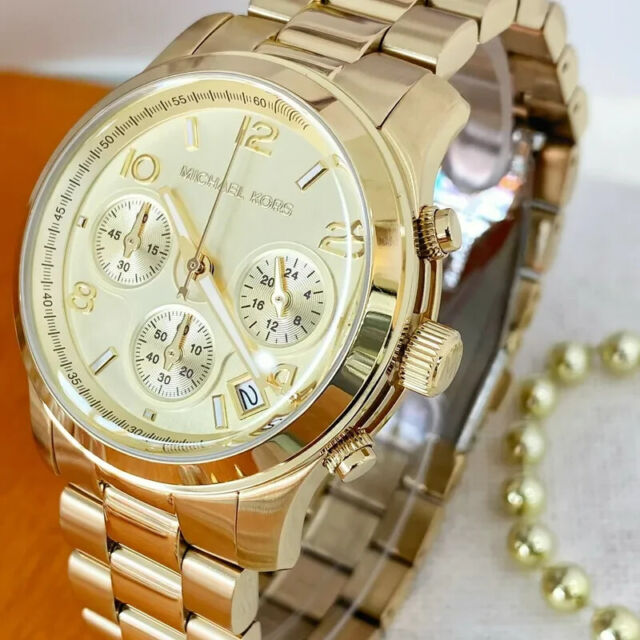

Lentes Raiban
Los lentes Ray-Ban son un ícono de estilo y calidad. Cada par de lentes Ray-Ban está diseñado
con un enfoque en la comodidad, la durabilidad y, por supuesto, el estilo1. Los lentes Ray-Ban
vienen en una variedad de estilos y colores, desde los clásicos aviadores hasta los modernos
wayfarer1.Una característica destacada de los lentes Ray-Ban es su construcción de alta
calidad. Cada par de lentes Ray-Ban está hecho con materiales de primera calidad, lo que
garantiza un ajuste cómodo y una larga durabilidad1.Además, los lentes Ray-Ban ofrecen una
excelente protección contra los rayos UV, lo que los hace perfectos para cualquier actividad
al aire libre1. Con lentes polarizados disponibles en ciertos estilos, puedes estar seguro de
que tus ojos estarán protegidos sin importar las condiciones de luz1 Así que, si estás
buscando unos lentes que sean versátiles, duraderos y siempre a la moda, no busques más
allá de los lentes Ray-Ban. Ya sea que estés yendo a la playa, a una caminata o
simplemente buscando el complemento perfecto para tu atuendo casual, unos lentes Ray-Ban
son la elección perfecta para ti. ¡Hazte con tus lentes Ray-Ban hoy mismo

Reloj Fossil para Hombre
Sumergirse en el universo de un reloj Fossil usado, en particular uno de color plateado, es
explorar un matrimonio exquisito entre estilo contemporáneo y funcionalidad atemporal. Con su
caja de acero inoxidable pulido, este reloj evoca una elegancia sutil pero impactante. Cada
línea y curva están meticulosamente diseñadas para crear una armonía visual que no pasa
desapercibida. La esfera plateada, delicadamente adornada con marcadores de hora y agujas
luminescentes, es un lienzo que captura la luz de manera cautivadora, jugando con las sombras y
los reflejos. La correa de acero inoxidable, con sus eslabones bien definidos, ofrece
resistencia y flexibilidad, adaptándose con gracia a la muñeca de quien lo lleva. Cada detalle,
desde el bisel hasta la hebilla, está impregnado de calidad y artesanía. Este reloj, aunque
usado, lleva consigo una historia, cada marca y rasguño cuenta una parte de un viaje personal.
Su aura plateada, a la vez moderna y clásica, lo hace versátil, adecuado tanto para ocasiones
formales como informales. Es más que un accesorio; es una declaración de estilo, una
manifestación de gusto refinado y apreciación por lo excepcional. Con cada tic-tac, este reloj
Fossil usado sigue marcando el tiempo con gracia y distinción, recordando que la verdadera
elegancia es eterna.

Reloj Michael Kors para Mujer
Sumergirse en el universo de un reloj Michael Kors es explorar un matrimonio exquisito entre estilo contemporáneo y funcionalidad atemporal. Con su caja de acero inoxidable pulido, este reloj evoca una elegancia sutil pero impactante. Cada línea y curva están meticulosamente diseñadas para crear una armonía visual que no pasa desapercibida. La esfera plateada, delicadamente adornada con marcadores de hora y agujas luminescentes, es un lienzo que captura la luz de manera cautivadora, jugando con las sombras y los reflejos. La correa de acero inoxidable, con sus eslabones bien definidos, ofrece resistencia y flexibilidad, adaptándose con gracia a la muñeca de quien lo lleva. Cada detalle, desde el bisel hasta la hebilla, está impregnado de calidad y artesanía. Este reloj, aunque usado, lleva consigo una historia, cada marca y rasguño cuenta una parte de un viaje personal. Su aura plateada, a la vez moderna y clásica, lo hace versátil, adecuado tanto para ocasiones formales como informales. Es más que un accesorio; es una declaración de estilo, una manifestación de gusto refinado y apreciación por lo excepcional. Con cada tic-tac, este reloj Michael Kors usado sigue marcando el tiempo con gracia y distinción, recordando que la verdadera elegancia es eterna.

Reloj Grand Seiko para Hombres
El reloj Grand Seiko SBGW252 es una obra maestra de la relojería japonesa que combina elegancia, precisión y artesanía
excepcional. Presenta un diseño clásico inspirado en los primeros relojes Grand Seiko de la década de 1960, con una caja
de acero inoxidable de 37 mm y un dial plateado con marcadores horarios aplicados y agujas en forma de hoja.
En su interior, alberga el calibre manual 9S64, un movimiento de alta calidad desarrollado y ensamblado en la famosa
manufactura de Grand Seiko en Japón. Este movimiento ofrece una reserva de marcha de aproximadamente 72 horas y una
precisión excepcional, certificada por los estándares de Grand Seiko.
El SBGW252 es un homenaje a la tradición relojera de Grand Seiko, con detalles cuidadosamente ejecutados y una atención
meticulosa a la calidad. Es una pieza atemporal que combina la artesanía japonesa con la innovación técnica, perfecta
para los amantes de los relojes que valoran la excelencia en cada detalle.

Aretes Pandora para Mujer
Sumérgete en la belleza y el estilo atemporal de los aretes Pandora para mujer. Cada par de aretes es una expresión de elegancia y sofisticación, diseñados con cuidado y detalle para realzar tu estilo personal. Los aretes Pandora están hechos con materiales de alta calidad y acabados exquisitos, garantizando durabilidad y belleza en cada uso. Ya sea para ocasiones formales o informales, los aretes Pandora son la elección perfecta para completar tu look con elegancia y distinción.
Cartera Dior para Mujer
Descubre la elegancia y el lujo de la cartera Dior para mujer. Cada diseño es una obra maestra de estilo y funcionalidad, elaborada con los mejores materiales y acabados impecables que caracterizan a la marca Dior. Con una amplia gama de estilos y colores, la cartera Dior es el accesorio perfecto para completar tu outfit con sofisticación y glamour en cualquier ocasión.

Fragancia Versace
Explora la exquisita fragancia de Versace, una mezcla única de elegancia y sofisticación. Cada aroma de Versace es una declaración de estilo y personalidad, capturando la esencia del lujo italiano en cada gota. Descubre una amplia gama de fragancias, desde frescas y florales hasta seductoras y audaces, diseñadas para realzar tu presencia y dejar una impresión duradera.